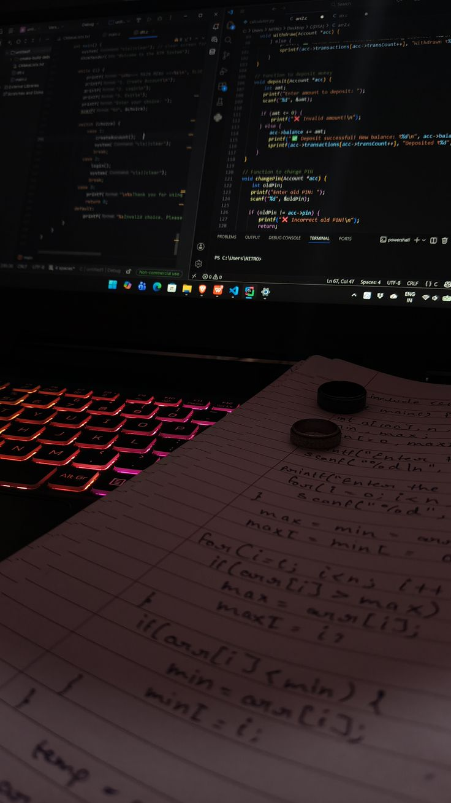
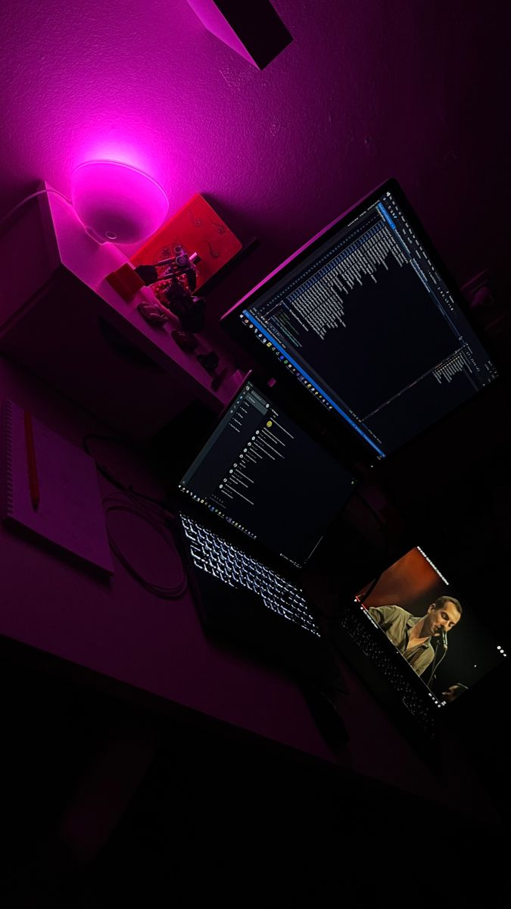
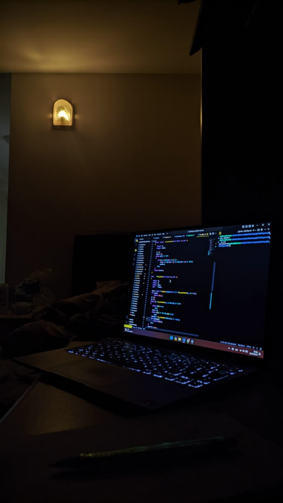

there's a specific kind of problem-solving that only happens when you've been coding for so long that the line between awake and dreaming gets questionable.
i don't recommend it. on a health level, it's a terrible idea. on a productivity level, it sometimes yields something that feels close to genius.
i was working on arguuu. specifically, on the ai judge system. the part of the app that's supposed to listen to two people argue and actually understand who won and why. which is harder than it sounds because winning an argument isn't objective. it's not points. it's rhetorical structure and emotional intelligence and the ability to adapt to what your opponent is actually saying. i'd been thinking about it for weeks. the prompt was close but not quite right. there was something missing. some layer of understanding that would make the bot feel like it actually gets what's happening instead of just pattern-matching to keywords.




and then at 3am on a sunday — or monday, time stops meaning anything at that point — it clicked. not metaphorically. literally. i was staring at the code and the coffee was cold and my eyes had that specific kind of dry that makes the screen look like it's swimming. and then the structure rearranged itself in my head and suddenly i could see what was missing.
it wasn't about building a better rubric. it was about the order. about asking the questions in a sequence that would naturally lead the model to deeper understanding. about using earlier judgments to inform later ones. about building understanding the way an actual judge would, rather than trying to render a verdict based on a snapshot.
i coded for another three hours after that. not because i was still delirious — though i was — but because the solution was there and if i didn't get it out of my head and into the system, it would evaporate by morning the way 3am clarity usually does. when someone tested it the next day, the results were objectively better. the bot felt more thoughtful. more fair. more like it had actually listened. i'm not saying it's sustainable. i'm saying it works.
← Back to Blog